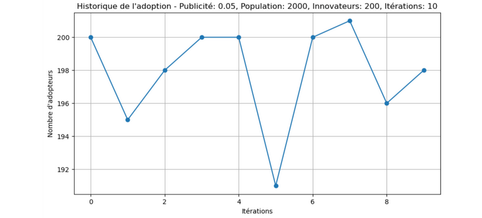
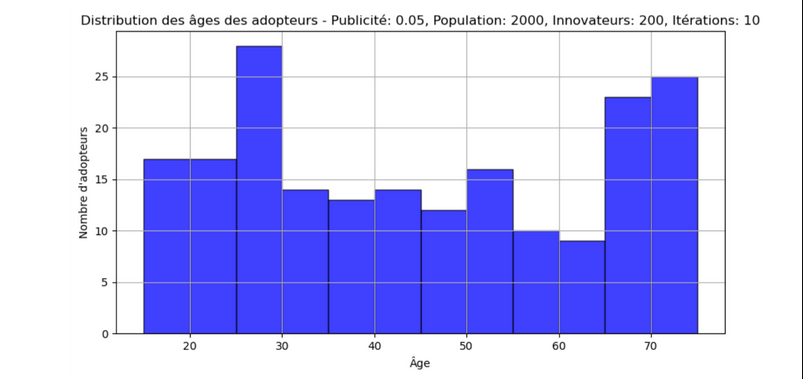

On a choisit d'étudier la diffusion d'une innovation dans une population. L'innovation en question peut-être une idée, un produit ou autre chose
Dans ce projet, nous cherchons à comprendre ce qui influence le plus les individus lorsqu'ils décident d'adopter une nouvelle idée ou un nouveau produit: est-ce la publicité ou les intéractions avec leurs entourage? On a choisi comme hypothèse à valider ou invalider:La publicité/communication autour de l'innovation impacte plus les individus dans l'adoption de l'innovation que l'influence des pairs. Notre objectif est d'étudier l'évolution de l'adoption d'une innovation dans une population et de déterminer si l'hypothèse est valide ou non.
-Python
-Jupyter notebook
-Github
Voici question images résultant de l'étude du projet
 